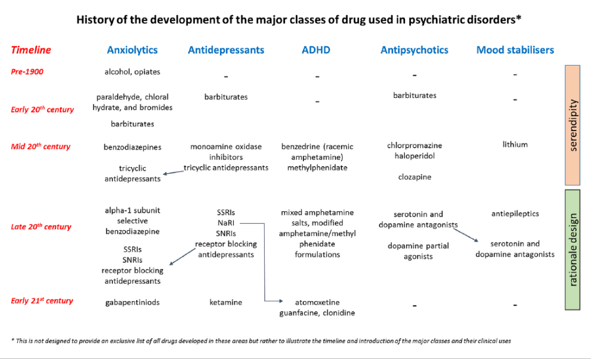

1 향정신성 의약품 개발과 우연의 역할
1.1 정신약물학의 태동과 클로르프로마진
정신약물학(psychopharmacology)이라는 명칭은 1920년 Macht1에 의해 붙여졌다. 이름은 거창했지만, 당시만 해도 기껏해야 퀴닌(quinine)과 아세트살리신 산이 근육 운동에 미치는 영향을 설명하는 정도였고, 정신질환의 치료를 논하기 까지는 한참 기다려야만 하였다.[1] 이로부터 30 여년의 세월이 지난 1952년에 이르러서야, 클로르프로마진이 당당히 조현병의 획기적인 치료제로서 미국과 유럽 양 대륙에서 인정받으면서, 진정한 의미의 정신약물학이 탄생하였다.
1 David Macht (1982~1961): 미국의 약리학자. 약물이 식물에 미치는 영향을 토대로, 인체 내에서의 약리 효과를 추정하는 기법을 개발하였다.
클로르프로마진은 정신약물학의 서막을 올린 의미심장한 약이지만, 그 개발 과정은 그야말로 우연의 연속이었다. 당시 프랑스의 제약사인 롱프랑(Rhône-Poulenc)에 근무하던 Paul Charpentier는 항히스타민제를 기반으로 하여 마취 보조제로 쓸만한 약물을 개발하고 있었고, 1950년 12월 11일 후보 물질 중 하나인 클로르프로마진이 합성된다. 당시 2차 대전 중 중상을 입은 군인들을 치료하고 있던 해군 군의관 Laborit2는 외상 자체보다는, 쇼크에 빠져 죽는 환자들이 더 많다는 것을 인지하고, 강력한 안정제를 써서 신진대사를 낮추고 저체온을 유지하면 쇼크를 예방할 수 있을 것이라는 가설을 세웠다. 그는 이를 입증하기 위해 다양한 약물을 시험해보았으며, 소위 Laborit cocktail3에 클로르프로마진을 포함시켜 보기로 하였다. Laborit cocktail의 효과는 지나친 스트레스 반응을 차단하는 것이었으며, 이를 투여한 환자들은 의식이 온전하고, 명령을 잘 따르며, 평온하고 혈압 변동도 잦아들었다.[2]
2 Henri-Marie Laborit (1914~1995): 프랑스의 해군 군의관. 클로르프로마진을 조현병 환자 치료에 사용해보도록 정신과 의사들을 설득하여, 최초의 임상 시험이 이루지도록 하는데 크게 공헌하였다. 본래 마취과 의사였기 때문에 정신과 의사들과 점점 의견이 엇갈렸고, 이 때문에 정신약물학에서 그가 세운 공로가 제대로 인정받지 못하였다. 말년에야 비로서 정당한 대우를 받을 수 있었다.
3 Laborit cocktail: Laborit가 중상을 입은 환자들을 안정시켜 쇼크를 예방할 목적으로 사용한 처방으로, promethazine, pethidine 그리고 클로르프로마진을 섞은 것이다. 이는 후에 neuroleptanalgesia라는 개념으로 확장되어 수술전 마취유도제로 종종 사용되었다.
이러한 조합이 흥분을 가라앉히고, 무념무상의 상태를 유도한다는 것을 관찰한 Laborit는 정신질환 환자에게 써보면 어떨까라는 번뜩이는 아이디어를 떠올렸고, 함께 군병원에 근무하던 동료들을 설득하기 시작하였다. 그의 열정에 설득된 동료들은 1952년 1월, 조증을 앓고 있던 한 남성 환자에게 클로르프로마진을 투여하였고, 비록 몇 시간 동안에 불과했지만 환자는 온전히 제정신을 되찾을 수 있었다. 이후 20일 동안 클로르프로마진을 반복하여 투여한 끝에 이 환자는 완전한 관해상태에 도달하였다.
놀라운 증례를 접한 Delay4는 동료인 Deniker5와 함께, 자신이 근무하던 병동의 환자들에게 클로르프로마진을 투여해 보았고, 이는 정신약물학 역사상 최초의 임상 시험으로 기록되었다. 그가 Deniker와 함께 1952년 5월부터 연말까지 발표한 6편의 논문은 클로르프로마진의 위치를 확고히하였고, 1952년 11월 롱프랑 사는 클로르프로마진을 Largactil™이라는 상품명으로 출시하였다.
4 Jean Dealy (1907~1987): 프랑스의 정신과의사. 파리에 소재한 성 안나 병원에 근무할 당시, Deniker와 함께 클로르프로마진의 임상 시험을 수행하였다. 이후 프랑스 정신과 학계의 총아로 떠올랐으나, 1968년 프랑스의 68 혁명을 주도한 학생들이 반정신의학의 기치하에 Delay의 사무실을 습격하였다. 그는 이를 계기로 은퇴하여 이후에는 집필활동에 몰두하였다.
5 Pierre Deniker (1917~1988): 프랑스의 정신과의사. Delay와 함께 클로르프로마진의 임상 시험을 수행하였다. 클로르프로마진을 미국 학계에 알리는데 공헌하였으며, 나중에는 약물의 행동적 부작용에 관심을 두어, 항정신병 약물의 고용량 사용을 반대하는데 앞장서기도 하였다.[3]
지나간 역사를 살펴보면, 클로르프로마진이 탄생할 수 있도록 행운의 신이 손을 쓰지 않았나 싶을 정도로 우연들이 겹쳐져있다. 애초에 정신질환 치료제로 쓰일 것이라고는 아무도 예상하지 못했고, 우연히 괴짜 의학자의 손에 들어간 후에도 엉뚱한 아이디어를 시험하는 데 사용되었다. Laborit가 어떻게 조증 환자에게 써볼 생각을 했는지도 언뜻 이해가 되지 않는다. 더군다나 현대의 정신과 신약 개발이나 임상 시험이 얼마나 성공하기 어렵다는 것을 감안한다면, 임상 시험의 경험도, 통계 분석의 기술도 전혀 없었던 의사들이 후세에도 반박하기 어려울만큼 훌륭한 결과를 얻어냈다는 것이 놀랍기만 하다.
1.2 기타 향정신성 의약품의 개발
우연에 의해 향정신성 의약품이 개발된 사례는 클로르프로마진에 그치지 않는다. 19세기 중반 유기 화학의 개념이 자리잡기 시작하면서, 화학자들은 특성이나 용도에는 개의치않고 새로운 알칼로이드 화합물을 합성하는데 여념이 없었다. 이런 와중에 chloral hydrate, barbiturate와 같은 약물이 우연히 탄생하였고, 화학자들은 흥미로운 성질을 보이는 화합물의 뼈대는 그대로 유지한 채 곁사슬(side chain)을 바꿔가면서 조금씩 개량해나갔다. 예를 들어 1864년에 처음 합성된 barbiturate를 뼈대로 하여, 20세기 초반까지 2,500개가 넘는 변형된 화합물이 개발되었고, 이중 50개 정도는 약효를 인정받았다.[4]

벤조디아제핀 역시, 스위스의 제약사 Hoffmann-La Roche 사에 근무하던 Sternbach6에 의해 우연히 개발되었다. 그는 젊었을 때 염색 공장에서 일하면서 RO-6-0690이라는 화합물을 합성해놓고 있었으나, 생업에 바쁘다보니 20년 이상 잊어버리고 있었다. 제약사에 근무하면서 우연한 기회에 이를 기억해낸 그는 화학식을 조금씩 변형시킨 끝에 chlordiazepoxide (Librium™) 합성에 성공한다.[6] 이러한 일화들은, 초기 약물 개발이 우연과 행운의 연속으로 이루어졌다는 것을 보여준다.
6 Leo Sternbach (1908~2005): 폴란등에서 태어나 미국에서 활동한 화학자. 벤조디아제핀을 처음으로 합성하였고, 이후 chlordiazepoxide, diazepam, clonazepam 등의 개발에도 연달아 성공하였다. 그의 성과는 국소 제약사였던 Roche가 세계적인 제약사로 탈바꿈하는데 가장 큰 역할을 하였다.
사정이 이렇다보니 약물들이 어떤 기전으로 효과를 내는 지에 대해 착각과 억측이 난무하게 되었다. 리튬의 항조증 효과를 제안한 Cade7의 사례는 이러한 과정을 실감나게 보여준다.[7] 이차 대전 중 포로로 잡혔다 귀환한 그는, 포로 생활 중의 경험과 통찰을 통해 정신질환을 앓는 환자들의 소변에는 무언가 독성물질이 있을 것이라고 믿게 되었다. 그는 환자로부터 채취한 소변을 guinea pig에게 투여해보았는데. 그의 예상대로 실험 동물이 죽어가는 것을 관찰하였다. 그는 당시 통풍 치료제로 사용되던 리튬이 소변 중의 독성 물질을 순화시킬 것이라고 생각하였는데, 놀랍게도 환자의 소변과 함께 리튬을 투여받은 동물들은 더 이상 힘들어하지 않고 평온해 보였다. 바로 이것이 리튬이 기분조절제로서 탄생한 순간이었다.
7 John Cade (1912~1980): 호주의 정신과 의사. 리튬이 조증 환자 치료에 처음으로 사용하였다. 호주의 정신의학 시설과 체계를 근대화하는데 공헌하였다.
그러나 현시점에서 돌이켜보면 조증 환자의 소변에 독성 물질이 들어있다는 것도, 리튬이 이 물질을 순화시킨다는 것도 사실이 아니다. 결과는 옳았지만, 여기에 이르게 된 가정은 오류 투성이었다. 실제로 이어진 임상 시험에서 리튬을 복용한 환자 중 다수는 독성으로 목숨을 잃었으며, Cade의 귀중한 발견은 훗날 의학자들이 재발견할 때까지 조용히 잊혀지고 말았다.8
8 Cade가 리튬의 임상 시험을 시행했던 해는 1949년이었으나, 학계의 주목을 받게 된 것은 1960년 미국의 Samuel Gershon과 Arthur Yuwiler가 재조명한 이후였다.[8]
1.3 약물의 작용 기전과 질병의 병인론
이처럼 20세기 전반의 향정신성 약물 개발이 대부분 우연의 소산으로 이루어졌기 때문에, 역으로 약물이 어떤 약리 효과를 내는지 연구함으로써 질병에 대한 지식이 조금씩 축적되었다. 예를 들어 단가아민 산화효소 억제제(monoamine oxidase inhibitor, MAOI)와 삼환계 항우울제(tricyclic antidepressant, TCA)의 작용을 설명하기 위해 등장한 단가아민 고갈가설9이, 우울증의 병인론으로 등장하는 식이었다. 여기서 발생한 중요한 문제는, 일반인은 물론 의사들까지도 약물의 작용 기전을 질병의 병인론으로 받아들이기 시작했다는 것이다. 단가아민 고갈가설은 약리학적 효과를 설명하는데는 성공적이었지만, 그렇다고 해서 우울증이 단가아민의 결핍 때문에 발생한다고 볼만한 근거는 별로 없었다. 그럼에도 불구하고, 이 가설은 모든 정신의학 교과서에 우울증 발생의 표준 가설로 실리게 되었다.
9 단가아민 고갈가설 (monoamine depletion hypothesis): 우울증이 단가아민 신경전달물질의 효용성의 저하, 특히 시냅스에서 세로토닌과 노르에피네프린이 고갈되어 증상이 나타난다는 가설.[9]
조현병에서도 사정은 다르지 않았다. 임상적 효과가 확인된 항정신병 약물들이 예외없이 도파민 D2 수용체를 차단한다는 것이 확실해지자, 이내 조현병은 선조체의 도파민 활성과다때문에 일어난다는 이론이 정설로 받아들여졌다.10 세월이 흐르면서 조현병이 이렇게 단순한 원인때문에 일어날 것이라고는 생각하지 않게 되었지만, 여전히 약리학적 효과를 통해 병인론을 역추론하려는 경향에는 변함이 없다. 비정형 약물이 5-HT 시스템을 건드리기 때문에 조현병 자체가 세로토닌 신호전달의 문제때문에 일어난다고 간주하거나, 클로자핀과 전기경련 치료가 세포 내 신호전달 체계를 뒤흔든다는 것을 토대로 세포 내 신호전달의 혼선이 조현병의 원인이라고 주장하는 것은 그러한 예이다.
10 도파민 가설 (dopamine hypothesis): 조현병이 선조체의 도파민 신경전달의 과다 활성때문에 일어난다는 가설. 과다 활성은 다음 세가지 과정 중 하나 때문에 일어날 수 있다. 1) 시냅스전 뉴런에서 도파민이 지나치게 많이 분비된다, 2) 대사 분해나 재흡수의 장애로 시냅스 간극에 지나치게 많은 도파민이 존재한다 3) 시냅스후 뉴런의 수용체가 기능적으로 지나치게 활성화된다. 세가지 기전 중 어느 쪽이 우세한지 아직 분명하지 않으나, 학자들은 세번째 가능성을 지지하는 경향이다.
이상적인 세계라면, 확고히 확립된 병인론을 토대로, 병태 생리를 이루는 경로의 부분 부분을 복구시키는 약물을 하나씩 개발해 나가면 될 것이다. 그러나 21세기에 접어들었어도 여전히 이러한 꿈은 이루어지지 않고 있다. 약물 개발은 여전히 과거에 효과가 있었던 약물을 끊임없이 변주하면서, 가능성이 있어보이는 물질을 선별하는 방식으로 진행된다. 임상 시험을 통과한 약물은 왜 효과적인지 이유도 모른 채 임상에 사용되고, 연구자들은 그 때부터 그 이유를 찾는데 주력한다. 그러나 모든 약리학적 효과가 애타게 찾아 헤매는 이유가 되는 것은 아니다. 약리학적 효과 중 일부는 오히려 부작용만 일으킬 것이며, 더 많은 부분은 그저 치료하고는 아무런 연관이 없다.
이 장에서 논해지는 항정신병 약물의 작용 기전은, 이유를 찾는 과정 중에 제시된 수많은 가설들에 지나지 않는다. 그 중 어떤 이야기는 질병 치료와는 별 상관없을 것이며, 어떤 이야기는 원치 않는 효과를 낳을 것이다. 그러나 구석에 숨겨져있던 어떤 이야기는 그야말로 치료의 핵심이며, 조현병이라는 미지의 정체를 이해하는데 중요한 단서를 지니고 있을 것이다. 이런 면을 숙고한 상태에서 논의를 시작하고자 한다.